Motion &
Visuals
Werbung, die bewegt.
Ich gestalte animierte Werbebanner und digitale Werbemittel für Webseiten, Google Ads und Social Media. Von klassischen Display Ads bis hin zu responsiven Kampagnen verbinde ich klare Botschaften mit prägnanten Animationen und einer starken visuellen Wirkung.
Animationen, Display Ads und Kampagnen – nach Projekten sortiert.
Lekkerland
Recruiting-Kampagne für verschiedene Zielgruppen
4 Motive
Lekkerland
Recruiting-Kampagne für verschiedene Zielgruppen
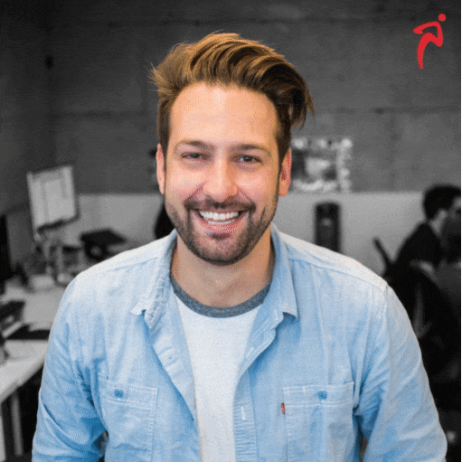
Mitakon
Responsive-Kampagnen und Objektivwerbung
5 Motive
Mitakon
Responsive-Kampagnen und Objektivwerbung
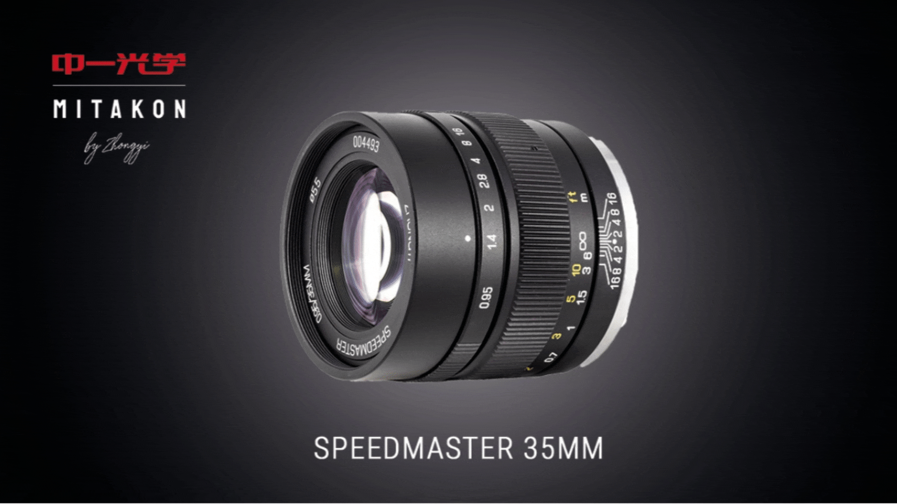
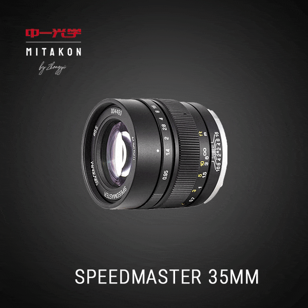
Nissin
Eine Kampagne, drei Bannerformate
3 Motive
Nissin
Eine Kampagne, drei Bannerformate
Tokina & HAPA
Produktwerbung, Content Ads und Leaderboards
6 Motive
Tokina & HAPA
Produktwerbung, Content Ads und Leaderboards
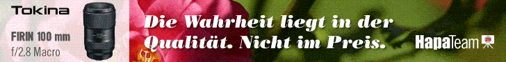
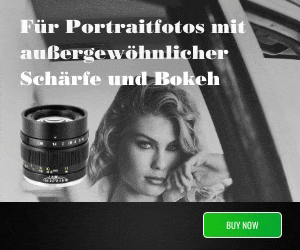
Vimbal & Yamaha
Werbebanner in unterschiedlichen Seitenverhältnissen
6 Motive
Vimbal & Yamaha
Werbebanner in unterschiedlichen Seitenverhältnissen

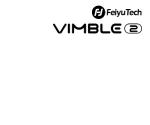
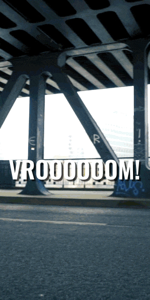
Weitere Kampagnen
Content Ads, Leaderboards und Einzelmotive
12 Motive
Weitere Kampagnen
Content Ads, Leaderboards und Einzelmotive
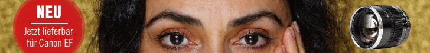
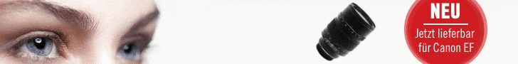
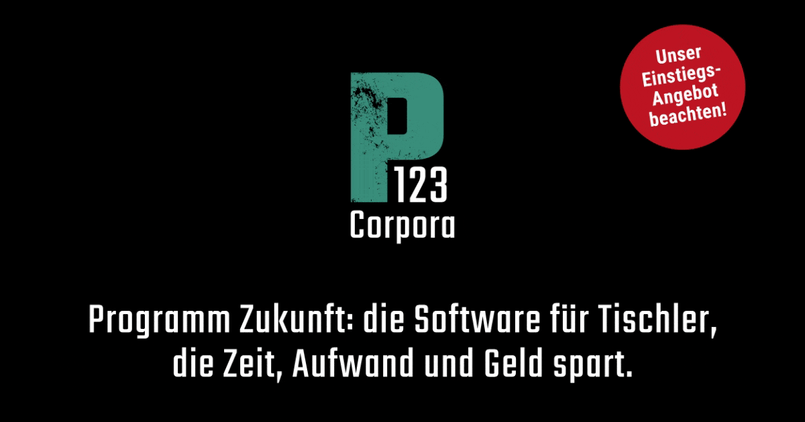
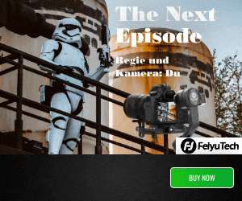
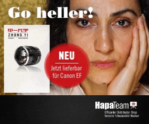
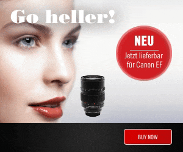
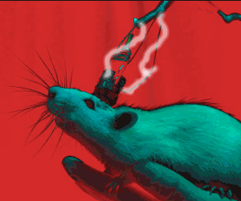